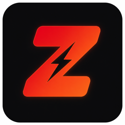

macOS
可下載
Universal DMG，Apple Silicon 與 Intel。拖進「應用程式」即可。
- macOS 14+
- 約 4 MB
- v2.0.6
若提示未驗證：系統設定 → 隱私與安全性 → 仍要打開。

ZapIPTV亞洲直播進行中
預設中國大陸，還有港澳台、日韓和東南亞。自己的片庫用 M3U / Xtream 匯入。
一台裝置一個安裝包
macOS、Windows、Android 三端現已可下載。Mac 版同時支援 Apple Silicon 與 Intel。
三個系統
第一屏就是中國大陸。央視、衛視、地方台。打不開會自動跳下一條。
CCTV-6、CHC、周星馳電影輪播，還有歷年春晚。
App 和官網都支援簡體、繁體，側欄一鍵切換。
點了就在主視窗裡播，不另開播放器。
到系統設定允許「未知來源」或「安裝未知應用」，再重新安裝 APK。
右鍵 App 選打開，或到系統設定 → 隱私與安全性 → 仍要打開。
目錄規劃一致：亞洲優先，預設中國大陸。播放器按系統會略有差別。